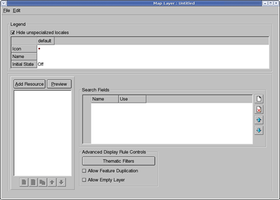
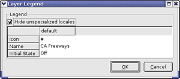
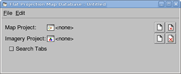
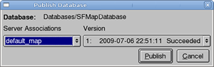

In addition to using Fusion to prepare and publish data in Google Earth, you can use it to prepare and publish map data in Google Maps. This lesson guides you through preparing your data for Google Maps.
The first step in preparing any data for publication is to import the source data as Fusion resources. You can use one of the vector resources you defined in Defining and Building Resources for Google Maps.
Note: For Google Maps, you define vector data only. When you define a Google Maps database, however, you can include an imagery project. The imagery project is the same for Google Maps as for Google Earth EC, so you can use the imagery project you defined in Defining and Building Resources as well.
After you define your vector resources, Google Maps requires an additional step. You must define and build at least one map layer for each map project. The first exercise in this lesson, Define a Map Layer describes how to do so.
The remaining steps are the similar for Google Maps data as for Google Earth EC data.
Defining a map layer consists of adding resources to the layer and defining the display rules and filters for the layer. This is similar to the process of defining display rules and filters for a vector project destined for Google Earth EC.
Note: The Flat Projection Maps layer uses the local copy of the Google Maps API and has no communication wth google.com. The Mercator Maps layer includes Google Maps layers and uses the Google Maps API from google.com. If you use Mercator projection, it requires a separate imagery database. For more details about the differences between the two types of map layers, see the Google Earth Enterprise Reference Guide.
 . The Map Layer Editor appears.
. The Map Layer Editor appears.

The legend area displays the current value of each property you can set for the map layer. The top row lists the names of the locales you support. When you first open this dialog for a new map layer, only the default locale and its values appear, and the box next to Hide unspecialized locales is checked. Google Maps uses the default locale settings when you do not specify different settings for a user’s locale in this tab.
(Refer to the Reference Guide for more details about these property values.)
ASSET_ROOT/Resources/Vector folder. The Feature and Filter tabs appear on the right. The first option on the Feature tab is Draw Features As. This option allows you to specify the display rules for the selected resource. The value you set for Draw Features As determines the options available for you to specify.
In this lesson, you define display rules for label only.
The Insert Field drop-down list contains the names of all fields in your source data.
In the source file for the selected resource, the Name column lists the names of the roads, so when you select the Name field here, it results in the names of the roads appearing in Google Maps.
The visibility range refers to the zoom level at which your labels are visible in Google Maps.
The Text Style dialog appears.
Note: The only font that Fusion provides by default is Sans regular. To add fonts, including international fonts such as Chinese, Japanese, or Hebrew, you can create a configuration file called a "font list" file. See Configuring Fonts For the Text Style Dialog in the Administration Guide.
A preview of the label appears in the Preview box.
After you save a style to a button, you can simply click that button to automatically select its text style settings for another label in the future.
ASSET_ROOT/MapLayers folder. The first step in defining a map project is to specify which map layers to include and give the project a name. Before you define a map project, however, add a subfolder to the asset navigation tree in the Asset Manager in which you can store your map projects.
 . The Map Project Editor appears.
. The Map Project Editor appears.
ASSET_ROOT/MapLayers folder.
The default legend name of the map layer, CAFreeways, appears in the Legend Name column, followed by <DEFAULT>, which indicates that this is the name you specified for the legend when you created the layer. The name and path of the map layer appears in the Layer column.

The new legend name appears in the Map Project Editor. Notice that <DEFAULT> no longer appears after the legend name. (If you ever want to return to the default name, right-click the value in the Legend Name field, and select Use Layer Defaults from the context menu.)
ASSET_ROOT/Projects/Map folder.

ASSET_ROOT/Projects/Map folder.ASSET_ROOT/Projects/Imagery folder.
Both projects appear on the list.
ASSET_ROOT/Databases folder.
In the Asset Manager, the new map database appears, along with the other databases you have created. Notice that the Category column distinguishes between the Google Earth databases and the Google Maps database.
Note: It might take a while to build the map database, because it is also building the project, since you did not build the it in the previous exercise.
When Fusion finishes building the database, its Current State column in the Asset Manager changes to Succeeded, and its Current Version column changes to the date and time the most recent build was started.

Note: Only server associations configured for publishing map databases appear on the drop-down list of server associations.
Fusion runs the publishing process on the database, and displays a success message when it is done.
Note: If you get an error message, contact your Google Earth Enterprise Server administrator for help, or check the Google Earth Enterprise Administration Guide for more information.
If you choose to use the Google Geo database, check to make sure the Rewrite rule in /opt/google/gehttpd/conf.d/virtual_servers/default_map.location is set correctly:
RewriteRule ^/default_map/+$ /maps/maps_google.html [PT]
If you choose to use a local maps database, set the rule to:
RewriteRule ^/default_map/+$ /maps/maps_local.html [PT]
After you publish your database, you can view it in a browser.
serverURL/default_mapwhere serverURL is the full URL of the stream server to which you published the map database, including the protocol, the server location, and the port (if the port is other than the default, port 80). For example:
http://my_host_name/default_mapIf you are not sure which server you published to, contact your Google Earth Enterprise Server administrator for help.
Google Maps displays your database.
Note: When you zoom in beyond full resolution of the background imagery, it disappears. Google Maps cannot magnify imagery beyond full resolution.